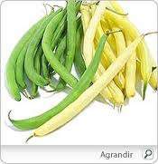

Haricot

Haricot (Phaseolus vulgaris de la famille des Fabacées)
Attention : hautement toxique par ingestion pour le Korat !
Partie toxique pour les chats en général et le Korat en particulier :
Haricot cru.
Par contre, il est possible d'en donner à son Korat en les faisant bien cuire (idéalement ceux surgelés sans sel).
Symptômes du processus pathologique :
Déplaisir à refus de s'alimenter, diarrhée, inflammation de l'estomac et des intestins, crampes.
Origine de la toxicité (principe actif) :
Une hémagglutine et un hétéroside cyanogénétique, la phaséolunatine.
Amour Korat's Inox